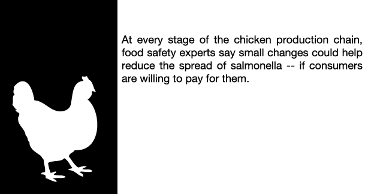

Problem: Salmonella Starts in the Egg
Salmonella originates before chicken eggs are even laid. Chickens can be infected with salmonella while still in the egg, if their mothers, called breeders, harbor the pathogen.
What could help: more vaccines for mother hens
Vaccinating breeders can reduce salmonella incidence by over 30 percent, according to a recent study by the University of Georgia. Another University of Georgia study conducted this year showed that if a vaccinated chicken is contaminated with the bacteria, it will have on average 50 percent fewer cells of the bacteria than an unvaccinated chicken. The vaccines cost approximately 10 to 15 cents per breeder, according to Robbie Moody of Pfizer Animal Health, a company that produces vaccines. While vaccination has been on the rise over the past two years, it has still not been largely embraced by the poultry industry as a whole. And, despite real-world studies showing its effectiveness, this practice is not required by the federal government.
Problem: Salmonella Breeds in Chickens’ Intestines
Salmonella proliferates in the guts of chickens if their drinking water is not acidic enough, and the country’s two largest chicken producers, Pilgrims Corp. and Tyson, don’t require farms that raise their chickens to treat water to kill the pathogen. Nor does the government require farmers to do so.
What could help: Better Drinking Water Treatment
Adding precise levels of chlorine to chickens’ drinking water can reduce the spread of salmonella. Adding too little chlorine does nothing to kill the bug in the chicken; adding too much could harm the birds. Maintaining the proper level requires at least daily monitoring by the farmers, which can be costly and time consuming. Government or chicken companies could require the farmers to implement this effective water treatment, but they don’t. Chicken companies rarely ask their farmers to do so, and few farmers do it on their own.
Problem: No Government Inspections of Farms
Chicken houses are a major hot spot for salmonella contamination because the bacteria can easily spread through a large flock. Yet they are out of the reach of federal food safety regulators, whose jurisdiction doesn’t begin until the birds leave the farm. The major poultry companies, Pilgrim’s Corp., Tyson and Perdue, voluntarily send an employee to the farms to monitor water quality, ground moisture, ventilation and pest control--all of which have been shown to keep salmonella down. But most of the monitoring is not based on scientific testing.
What could help: Government Inspections of Chicken Houses
Processing plants have inspectors on site every day and are required to develop food safety plans. Similar requirements on the farm could be effective in containing salmonella before it spreads down the line. But a change in the law would be needed to give the USDA authority to inspect poultry farms, which would require the agency to hire more inspectors.

Problem: No Salmonella Testing on Farms
Live broiler chickens are almost never tested for salmonella, so no one knows if a flock destined for slaughter is heavily infected. The result of this is two-fold: Producers cannot accurately track what interventions are effective on their farms and processors cannot tailor their safety plans to more carefully handle contaminated flocks.
What could help: Test Flocks Like in Europe
On-farm testing is done in some European countries with smaller poultry industries, like Denmark and Sweden, and several leading U.S. consumer groups partially attribute their ability to control salmonella to this. In Denmark and Sweden the incidence of salmonella in poultry is 0 and 0.3 percent, respectively. If flocks were tested in the United States, those infected with salmonella could either be destroyed or diverted for further processing to kill pathogens before they reach the public, according to consumer groups.
Problem: Salmonella Spreads on Trucks
Salmonella can spread when birds are trucked from farm to slaughter. Rough conditions can raise their stress levels and cause salmonella in their guts to multiply. Crates and trucks are not washed regularly between shipments because there is often not enough time to allow them to air dry. Loading flocks into damp crates and trucks could potentially make the situation worse, since bacteria thrive in moist environments. There are no federal regulations aimed at stopping the spread of salmonella during transport.
What could help: Require Shippers to Clean Properly
Poultry scientists know that overcrowding, extreme temperatures and rough handling cause stress and raise salmonella levels, but they don’t know why. And they aren’t sure what practices to recommend to poultry companies to fix the problem. Requiring trucking companies to properly clean their cages and trucks would help reduce the cross contamination between chicken flocks in transport.
Problem: Salmonella Spreads During Slaughter
Salmonella needs to be killed at every step in processing. If proper brushes and chemicals aren’t used, salmonella can spread through contact between birds. Scalding tanks -- heated baths to loosen feathers -- and defeathering machines are hot spots. Levels can spike when the birds are gutted, or if chill tanks -- a bath to lower meat below 40 degrees -- aren’t properly managed.
What could help: Use More Chemical Decontaminants
Most companies use antimicrobials in both the scalder and chill tank, and use rinses to treat defeathering machines. Experts say companies don’t use enough and are reluctant to pay for additional treatments. More precise evisceration techniques can keep guts from spilling. Some companies use bird washes and run their lines through a disinfecting mist. Brushes are also used in many places to remove feces. The government requires food safety plans but doesn’t require plants to use any particular intervention.
Problem: Minimal Salmonella Testing in Poultry Plants
Companies don’t have to test for salmonella. The USDA tests just 51 birds every year in most plants, even as a typical plant slaughters upward of a million birds every week. The USDA does not have legal authority to enforce a limit on salmonella in chickens at a plant, or to stop distribution and sale of contaminated birds. They can only review a plant’s safety plan and retest failing plants weeks later.
What could help: Increase Salmonella Testing During Processing
Daily testing can show whether or not a plant is killing salmonella. Likewise, leading consumer groups say inspectors should have the authority to shutdown plants with high salmonella levels. That would require a change in the law. The agency is launching a voluntary program that gives plants incentives to conduct more frequent tests, but not all plants are required to participate.
Problem: Salmonella Increases on Trip to Market
Salmonella bacteria in poultry can multiply to dangerous levels if temperature in transport rises above 41 degrees Fahrenheit. Companies check temperatures when products are loaded onto a truck and when they are unloaded. What happens in between is often unknown. Refrigeration units are not built to quickly bring warm meat back down to cold temperatures, which may be needed after making multiple delivery stops on a hot day. A 2007 industry study found unsafe temperatures in 30 percent of transports between processors and distribution centers.
What could help: Better Technology to Monitor Temperature
Trucking companies could use recorders to monitor temperature fluctuations during transit, but there are no government regulations requiring them to do so. Large companies with brand names to protect often require suppliers and distributors to use the recording devices, but they are not as common among small and medium-sized businesses.
Problem: Raw Chicken Not Kept Cold Enough
In 2009, the FDA tested chicken breasts sold in grocery stores and found that 21 percent were contaminated with salmonella. Salmonella can spread through cross contamination and bacteria can grow rapidly if there are inadequate store temperature controls. The FDA found 53 percent of deli departments didn’t keep food products at proper temperatures, providing a breeding ground for bacteria. If temperatures go above 41 degrees Fahrenheit, a few bacteria can multiply into billions within 12 hours. Enforcement of holding temperatures and food-handling procedures vary depending on local health department food codes.
What could help: Improve Training for Store Workers
More training for employees on food-handling practices and proper holding temperatures could help prevent food from being stored at improper temperatures, thus reducing the possibility of bacterial growth. Major chains like Giant and Wegmans have their own employee training programs for food handling.

Problem: Restaurant Workers Don’t Wash Properly
An FDA study in 2008 found only 24 percent of workers in full-service restaurants had cleaned their hands properly when they were required, including after they used the bathroom. Poor hygiene practices can allow pathogens to spread. Food workers who don’t wash their hands after handling raw meat can spread salmonella across the restaurant by touching other foods or utensils. Cooking may destroy bacteria on meat, but salmonella can live on uncooked produce that goes onto the salad bar.
What could help: More Hand Washing Opportunities
Worker training, hand-washing signs and convenient hand-washing stations can mitigate cross-contamination in commercial kitchens. Only 15 states and the District of Columbia require restaurants to have a certified food safety manager in the kitchen at all times in order to operate. The FDA also suggests that restaurants encourage employees not to show up for work when they're sick.
Problem: Consumers Don't Keep Food Safe
Consumers bring salmonella into their homes when they purchase poultry. The bacteria can proliferate if chicken is defrosted at room temperature or if cooked to less than 165 degrees. Half of Americans don’t ever use food thermometers. The pathogen can contaminate kitchen surfaces if not cleaned properly. Almost half of consumers use the same cutting boards for raw poultry and produce.
What could help: Increase Food Safety Education
The USDA and the Ad Council just recently launched a new ad campaign with television, radio and print ads that reinforce the mantra of “clean, separate, cook and chill” to educate consumers about what they can do to protect themselves. Cooking shows, recipes and government food safety campaigns can raise awareness. Manufacturers can make sure the cooking instructions on frozen or packaged foods are accurate, detailed and clear.